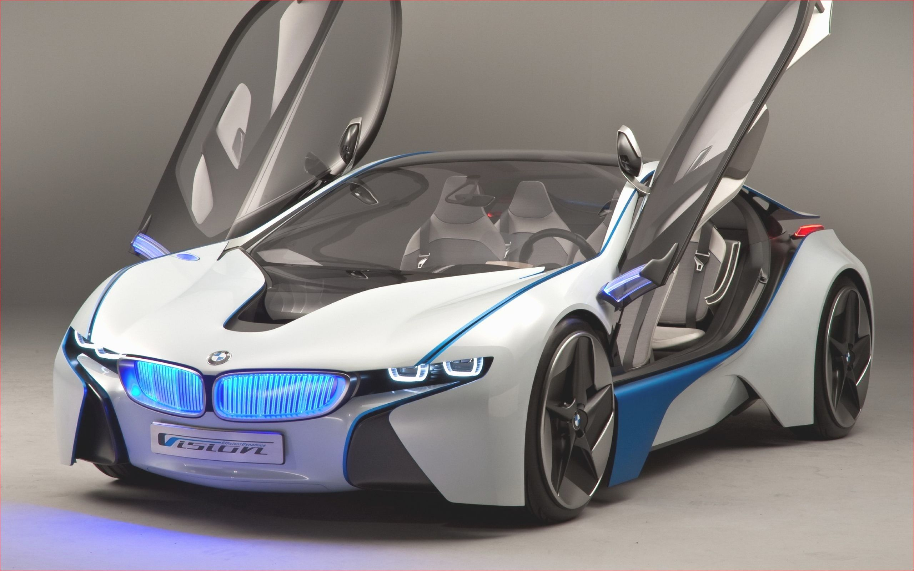
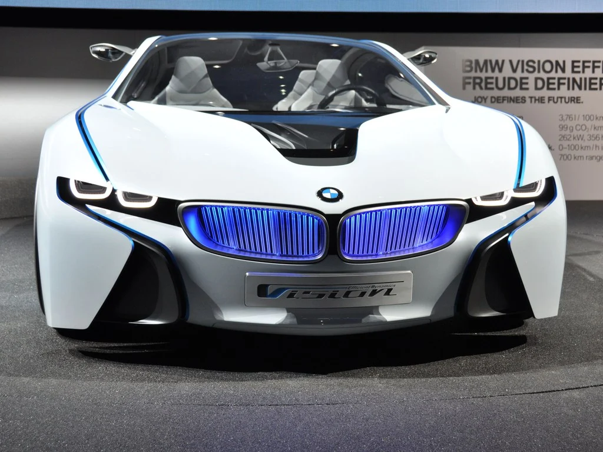

Cookies We use cookies to optimise and continuously improve our website for individual users like you. Please see “Cookies” to learn more about how they are used on our website. Click “Accept cookies” to activate them or “Reject cookies” if you do not want them. You can change your settings here at any time.

Cookies We use cookies to optimise and continuously improve our website for individual users like you. Please see “Cookies” to learn more about how they are used on our website. Click “Accept cookies” to activate them or “Reject cookies” if you do not want them. You can change your settings here at any time.
Cookies We use cookies to optimise and continuously improve our website for individual users like you. Please see “Cookies” to learn more about how they are used on our website. Click “Accept cookies” to activate them or “Reject cookies” if you do not want them. You can change your settings here at any time.
Cookies We use cookies to optimise and continuously improve our website for individual users like you. Please see “Cookies” to learn more about how they are used on our website. Click “Accept cookies” to activate them or “Reject cookies” if you do not want them. You can change your settings here at any time.
WELCOME TO YOUR NEW BMW.
Your Iphone as your Key
In cooperation with Apple, BMW is the first car maker in the world to offer customers a digital car key on their iPhone. In the future, you will be able to set up a car key on a compatible iPhone and share it with up to five friends. Here’s how the BMW Digital Key works.
Let you Explore Our New Features
If both your iPhone and your car are compatible, you can set up a Digital Key. If your BMW is not already linked to a BMW ID, use the My BMW App to add it to an existing BMW ID or to create a new BMW ID. First, create a BMW ID and use the My BMW App to add your vehicle. To begin the setup process, access the Digital Key menu in the app. For security reasons, you must be sitting in your car and have both of your regular car keys with you in order to prove that you are the owner. Press the Start Pairing button, follow the instructions in the My BMW App menu, and place your iPhone in the smartphone tray with the NFC sensor, and you’re done! Your Digital Key will then be stored in the Apple Wallet app.
3 Series Specs, Features
The BMW 3 Series has 1 Diesel Engine and 1 Petrol Engine on offer. The Diesel engine is 1995 cc while the Petrol engine is 1998 cc . It is available with the Automatic transmission. Depending upon the variant and fuel type the 3 Series has a mileage of 16.13 to 19.62 kmpl. The 3 Series is a 5 seater sedan and has length of 4824mm, width of 1811 mm and a wheelbase of 2810 mm.
The BMW 3 Series has 1 Diesel Engine and 1 Petrol Engine on offer. The Diesel engine is 1995 cc while the Petrol engine is 1998 cc . It is available with the Automatic transmission. Depending upon the variant and fuel type the 3 Series has a mileage of 16.13 to 19.62 kmpl. The 3 Series is a 5 seater sedan and has length of 4824mm, width of 1811 mm and a wheelbase of 2810 mm. The BMW 3 Series has 1 Diesel Engine and 1 Petrol Engine on offer. The Diesel engine is 1995 cc while the Petrol engine is 1998 cc . It is available with the Automatic transmission. Depending upon the variant and fuel type the 3 Series has a mileage of 16.13 to 19.62 kmpl.5